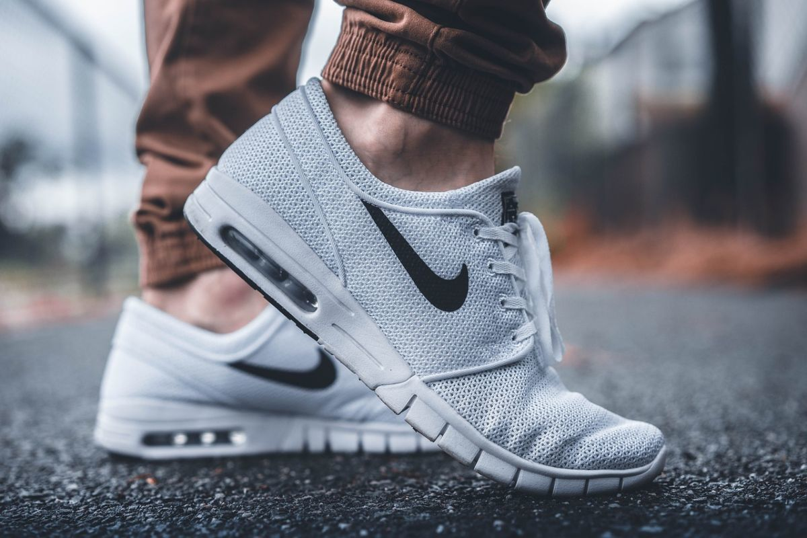
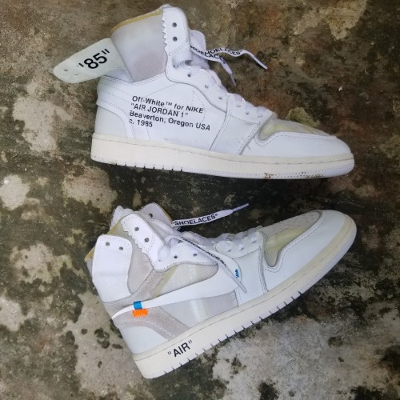
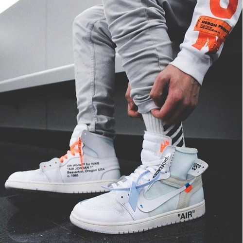
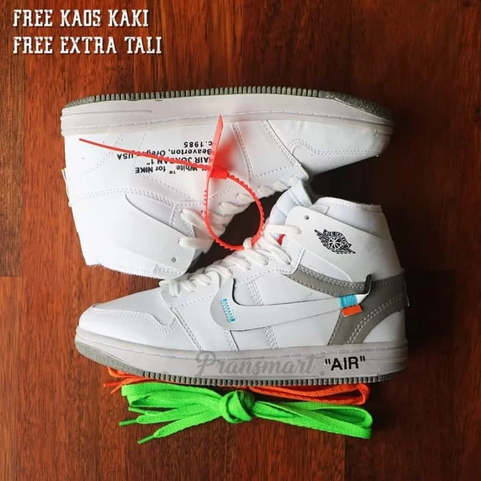
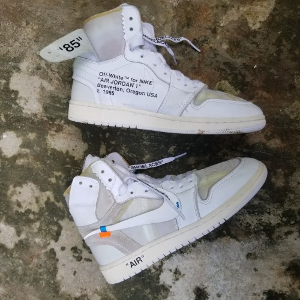
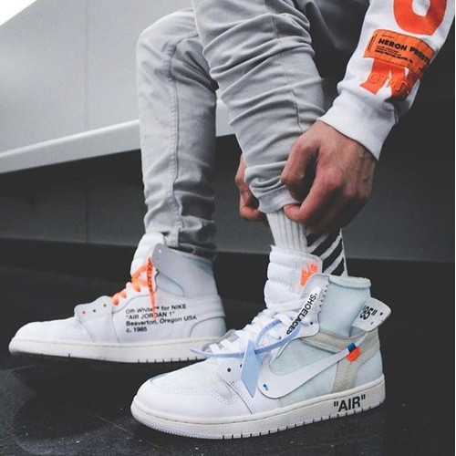
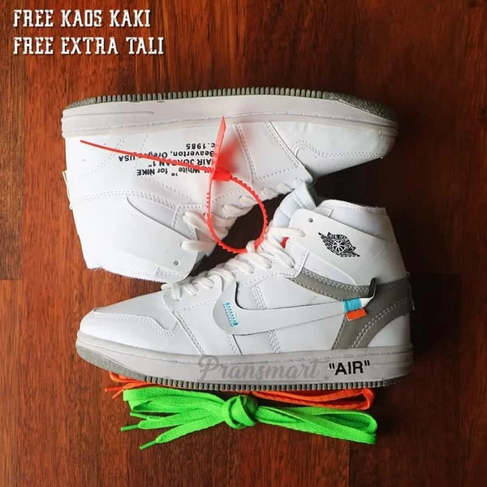

JUST DO IT
Nuestros productos
 





Nuestra Historia
Nike, una de las marcas más reconocidas en el mundo del deporte, fue fundada en 1964 por Bill Bowerman y Phil Knight bajo el nombre de "Blue Ribbon Sports". Desde sus humildes comienzos en Oregon, Estados Unidos, Nike se ha convertido en un gigante global en la industria del calzado, la ropa y los accesorios deportivos.

La filosofía de Nike se centra en la innovación y el deseo de ayudar a los atletas a alcanzar su máximo potencial. Desde el principio, la marca se dedicó a desarrollar productos de alta calidad que mejoraran el rendimiento de los deportistas. En 1971, Nike lanzó su icónico logotipo "Swoosh", que representa velocidad y movimiento, y se ha convertido en un símbolo reconocible en todo el mundo.
- Nike Air Max 270 - $150
- Nike Air Jordan 1 - $170
- Nike Air Force 1 - $90
- Nike Air Max 90 - $120
- Nike Free RN - $100
- Nike React Element 55 - $130
- Nike Zoom Pegasus 38 - $120
- Nike Air Max 97 - $160
- Nike Blazer Mid '77 Vintage - $100
- Nike Roshe One - $75
- Nike Cortez - $70
- Nike SB Dunk Low - $100
- Nike Air Max 2090 - $150
- Nike Epic React Flyknit 2 - $150
- Nike Joyride Run Flyknit - $180
- Nike Metcon 6 - $130
- Nike Air Zoom Vomero 14 - $140
- Nike Kyrie 7 - $130
- Nike Phantom Venom Elite FG (soccer cleats) - $250
- Nike ZoomX Vaporfly Next% (running shoes) - $250